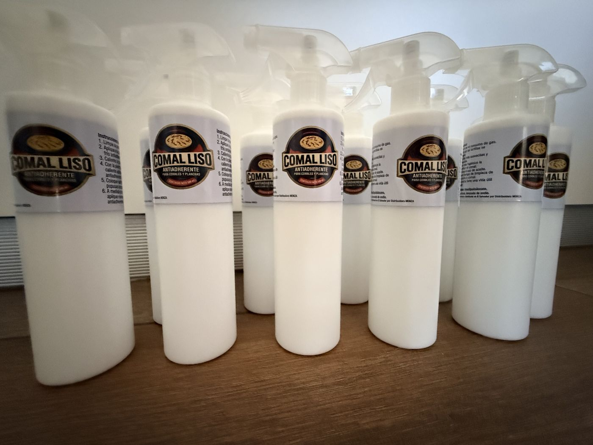
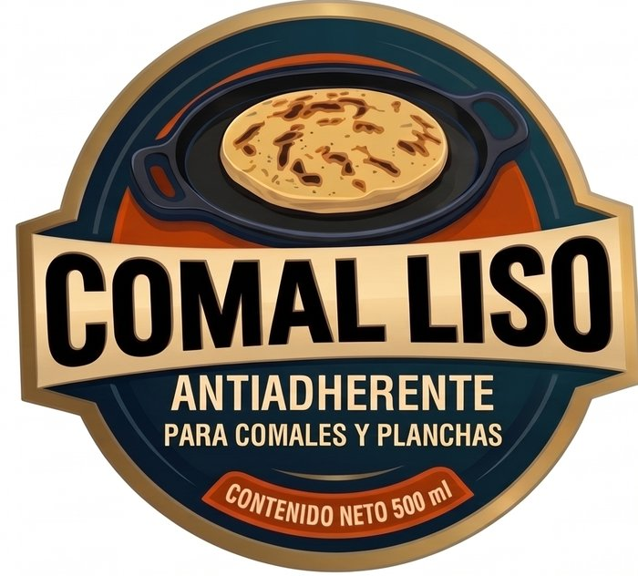
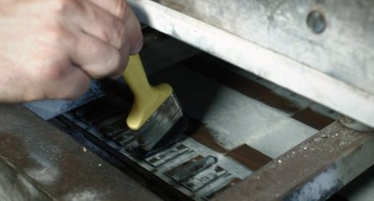
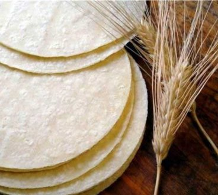
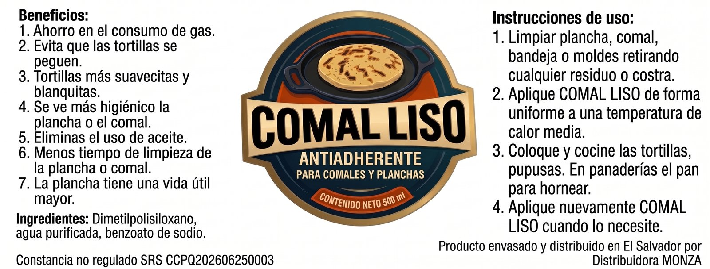

Ahorro
Procesos más eficientes y mejor aprovechamiento de su materia prima. Producir mejor también es producir con menos desperdicio.
Aditivos y soluciones de nivel industrial para la industria de alimentos: más rendimiento en su proceso, mejor calidad en su producto final y un sello que lo diferencia de la competencia.
Productos de nivel industrial, únicos en El Salvador, pensados para que su proceso rinda más y su producto se vea y sepa mejor.
Procesos más eficientes y mejor aprovechamiento de su materia prima. Producir mejor también es producir con menos desperdicio.
Textura, sabor, presentación y vida de anaquel: nuestras materias primas ayudan a que su producto final llegue mejor a su cliente.
Productos innovadores que no encuentra en otro lado del país. Una ventaja real frente a su competencia.
Somos distribuidor oficial de aditivos Mexenil en El Salvador. Llevamos a la industria salvadoreña materias primas y soluciones de nivel industrial para productos de maíz y trigo.
También envasamos en El Salvador Comal Liso, el antiadherente para comales y planchas de pupuserías, tortillerías y panaderías.
Trabajamos de la mano con cada planta: entendemos su proceso y le recomendamos lo que de verdad le ayuda a ahorrar, a mejorar su producto y a diferenciarse.
Línea oficial de aditivos e insumos de especialidad de Mexenil Aditivos S.A. de C.V. (México). Abra la ficha técnica de cada producto o cotice directo por WhatsApp.
Conservador en polvo que evita el crecimiento de hongos y otros microorganismos en masas y tortillas de maíz nixtamalizado, harina de maíz y mezclas. Alta vida de anaquel sin necesidad de refrigeración.
| Ingredientes | Almidón de maíz, carbonato de calcio, propionato de sodio, propionato de calcio, citrato trisódico y fosfato tricálcico. |
|---|---|
| Dosis recomendada | En harina: desde 10 g por kilogramo de harina de maíz, mezclando en seco antes de hidratar. |
| Presentación | Sacos de 5 kg y 20 kg. Papel kraft multicapa con bolsa interna de polipropileno. |
| Certificaciones | Halal · Kosher · HACCP |
| Normas | Cumple NOM-251-SSA1-2009 · Registrado COFEPRIS · Alineado FDA (FSMA) |
Evita el crecimiento de microorganismos en productos de maíz (nixtamal, harina o mezclas). No aporta aromas ni sabores ajenos: la tortilla conserva su sabor de siempre.
| Ingredientes | Almidón de maíz, carbonato de calcio, propionato de calcio, sorbato de potasio, sulfato de calcio, metilparabeno y fosfato tricálcico. |
|---|---|
| Dosis recomendada | En masa: 12.5 g por kilogramo. En harina: 25 g por kilogramo, mezclado en seco. |
| Presentación | Sacos de 5 kg y 20 kg. Papel kraft de alta resistencia. |
| Certificaciones | Halal · Kosher · HACCP |
| Normas | Registrado COFEPRIS · NOM-251-SSA1-2009 |
Conservador grado alimenticio de amplio espectro para productos empacados de harina de trigo. Excelente vida de anaquel a temperatura ambiente, contra hongos y bacterias.
| Ingredientes | Almidón de maíz, carbonato de calcio, propionato de calcio, citrato trisódico y fosfato tricálcico. |
|---|---|
| Dosis recomendada | Dosis: 22 g por kilogramo de harina de trigo, mezclado perfectamente en seco. |
| Presentación | Saco de 20 kg. Papel kraft multicapa con bolsa interna de polipropileno. |
| Certificaciones | Halal · Kosher · HACCP |
| Normas | Registrado COFEPRIS · NOM-251 |
Sustituye a la cal tradicional en la nixtamalización. Da suavidad en el cuerpo y en las orillas de la tortilla, recién hecha o recalentada, elimina el lavado del nixtamal y aumenta el rendimiento de la masa.
| Ingredientes | Hidróxido de calcio, almidón de maíz y vitaminas del complejo B. |
|---|---|
| Dosis recomendada | Masa blanca: 8 a 10 g por kilogramo de maíz. Masa amarilla: ajustar según el tono deseado. Agregar directo al agua de cocción. |
| Presentación | Sacos de 20 kg. Papel kraft multicapa con bolsa interna. |
| Certificaciones | Halal · Kosher · HACCP |
| Normas | Registrado COFEPRIS · Cumple NOM-251-SSA1-2009 |
Aditivo concentrado que corrige y mejora masas y tortillas de harina de maíz: más suavidad, elasticidad, volumen y resistencia. Menos tortillas quebradas y más frescura al recalentar.
| Ingredientes | Almidón de maíz, fibra vegetal, mono y diglicéridos de ácidos grasos, maltodextrina, sulfato de calcio, carboximetilcelulosa y fosfato tricálcico. |
|---|---|
| Dosis recomendada | Dosis: 120 a 200 g por cada 20 kg de harina de maíz (en seco) o por cada 20 kg de masa (espolvoreado parejo). |
| Presentación | Saco de 20 kg. |
| Certificaciones | Halal · Kosher · HACCP |
Mejorador en polvo que da un esponjado óptimo a la tortilla de harina sin polvo para hornear adicional. Tortillas más gruesas, con buena miga y sin cambiar el diámetro.
| Ingredientes | Almidón de maíz, harina de soya, mono y diglicéridos de ácidos grasos, carbonato de calcio, maltodextrina y fosfato tricálcico. |
|---|---|
| Dosis recomendada | Dosis: 9 a 16 g por kilogramo de harina de trigo, mezclado parejo en seco. |
| Presentación | Saco de 20 kg. |
| Certificaciones | Halal · Kosher · HACCP |
Polvo para hornear de doble acción para tortillas de harina empacadas. No interfiere con conservadores ni mejoradores, no reseca la masa y no deja sabores ni olores.
| Ingredientes | Almidón de maíz, bicarbonato de sodio, sulfato de aluminio y sodio, y fosfato monocálcico. |
|---|---|
| Dosis recomendada | Dosis: desde 8 g por kilogramo de harina de trigo, mezclado directo en seco. |
| Presentación | Saco de 15 kg. |
| Certificaciones | Halal · Kosher · HACCP |
Antiadherente concentrado que evita que la masa y la tortilla se peguen en los comales de las máquinas tortilladoras. Ideal para planchas y láminas de alta temperatura. No echa humo ni olores.
| Ingredientes | Agua, dimetilpolisiloxano, ésteres de glicerina de ácidos grasos y benzoato de sodio. |
|---|---|
| Modo de uso | Uso: diluir 1 kg de producto en 5 litros de agua purificada, agitar y aplicar con atomizador o brocha sobre la superficie limpia y caliente. |
| Presentación | Garrafón de 1 kg y 5 kg, y cubeta de 19 kg de polietileno de alta densidad. |
| Certificaciones | Halal · Kosher · HACCP |
Lubricante de grafito sintético para máquinas tortilladoras y equipo de panificación: cadenas, bujes, bisagras y zonas de fricción constante. Seca rápido, cubre bien y no echa humo ni olores tóxicos.
| Ingredientes | Agua, grafito sintético, polisacáridos y propanotriol. |
|---|---|
| Modo de uso | Uso: listo para usar, sin diluir. Aplicar con brocha o aceitera en bisagras, cadenas o engranes con la máquina apagada y fría. |
| Presentación | Cubetas de 4 kg y 20 kg con tapa de seguridad inviolable. |
| Certificaciones | Halal · Kosher · HACCP |
| Normas | NOM-251 · Registro COFEPRIS |
También distribuimos sazonadores para snacks, botanas y productos horneados. Pregunte por disponibilidad →
Descargue el catálogo técnico con ingredientes, dosis, presentaciones y certificaciones de cada producto.


Para pupuserías, tortillerías y panaderías. Sus tortillas y pupusas no se pegan, la plancha queda limpia y deja de gastar en aceite. 500 ml con atomizador.
Limpie la plancha, comal, bandeja o molde, retirando cualquier residuo o costra.
Aplique COMAL LISO de forma pareja con calor medio.
Coloque y cocine sus tortillas o pupusas. En panaderías, el pan para hornear.
Vuelva a aplicar COMAL LISO cuando lo necesite.
Ingredientes: Dimetilpolisiloxano, agua purificada y benzoato de sodio. · Constancia de no regulado SRS CCPQ202606250003
Los aditivos Mexenil se elaboran bajo estrictas normas de inocuidad alimentaria.
Certificaciones y registros declarados por el fabricante, Mexenil Aditivos S.A. de C.V. Las normas aplicables a cada producto aparecen en su ficha técnica.
Videos oficiales de Mexenil sobre los productos que distribuimos en El Salvador.
Mejorador para nixtamalización que sustituye a la cal.
Lubricante grafitado para máquinas tortilladoras.
Sabores para snacks, botanas y productos horneados.



Cuéntenos qué produce y le recomendamos la solución adecuada. Atendemos a empresas en todo El Salvador.